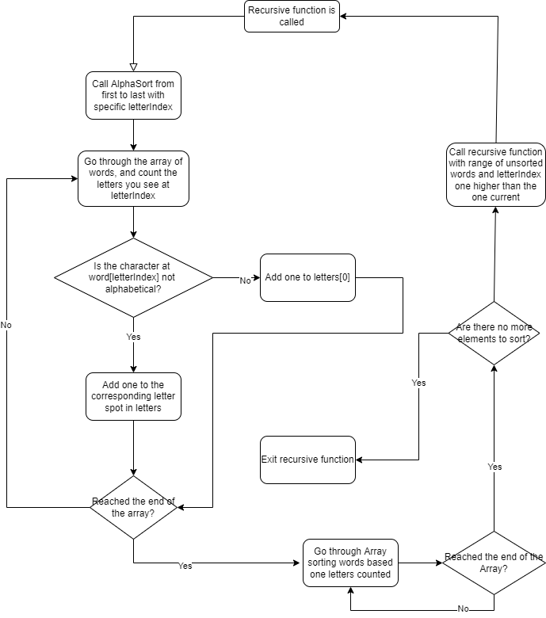

Worked with: Hamza, Darsh
Goal: Create a sorting algorithm that is unique and optimize it to be fast.
A flowchart explaining the algorithm:

Summary
The fundamental idea is rooted in two passes over the array of words. In the first pass, you count the amount of words in the array with each letter at your certain "letter index", or the letter your sorting at (ie. you need to sort all the A's by the second letter, then further by the third and so on). Now that you know the amount of each letter, you can pass through the array, this time placing each element in the correct general spot, putting all the A's in the beginning, then the B's, and so on. Calling this on the 26 letter groups recursively after sorting the first time will result in a fully sorted array. This results in a complexity of abou O(2n) per letter in the longest word in the array, as your only doing two passes. This is extremely fast, however there's one more thing we can do to speed it up.
Optimal Sort
New Testing
Code:
Sort Testing Github https://github.com/Rupak-B/Sorting-Algorithm Back to the Projects page